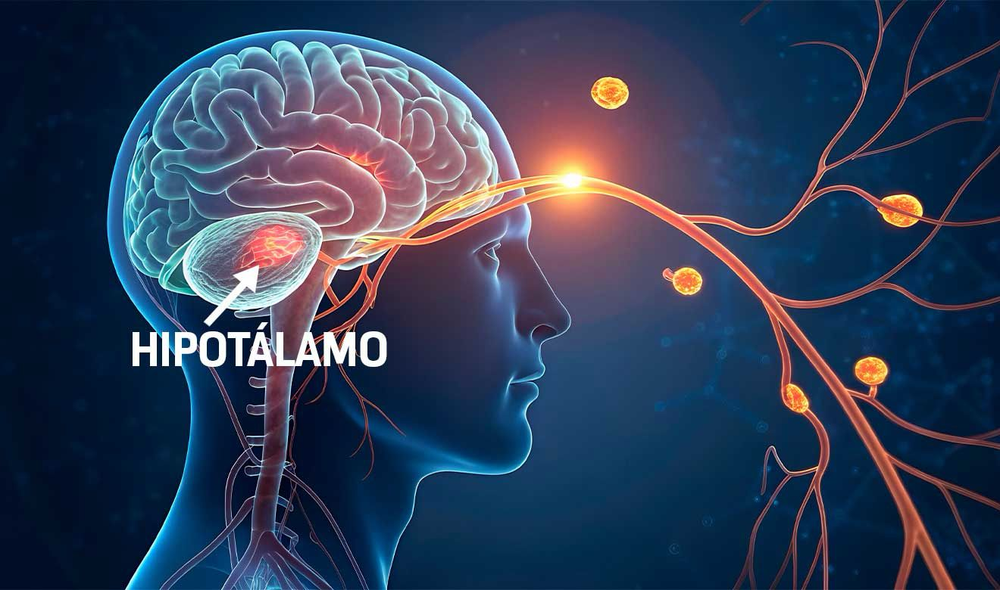
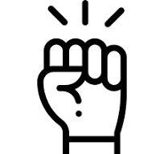
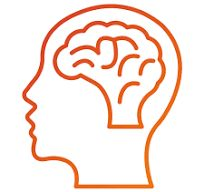
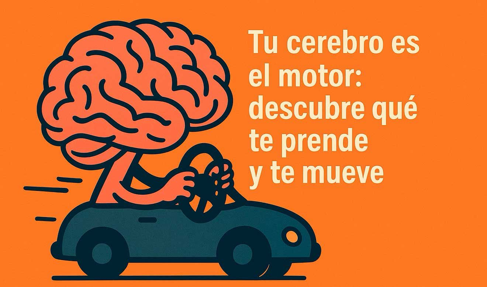
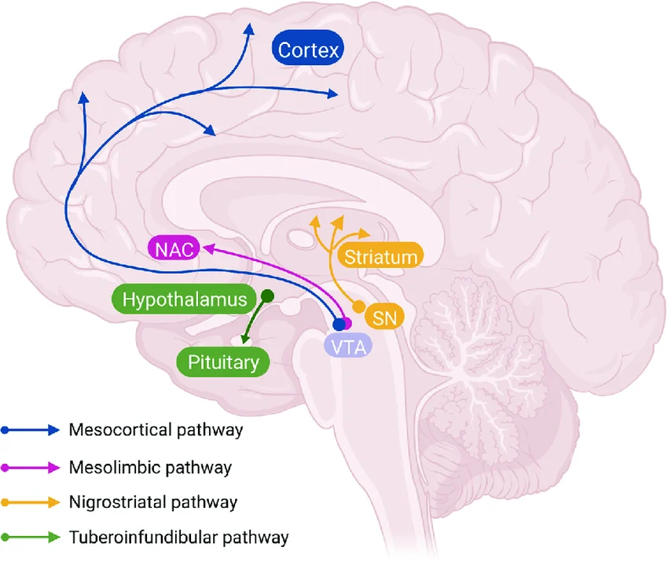
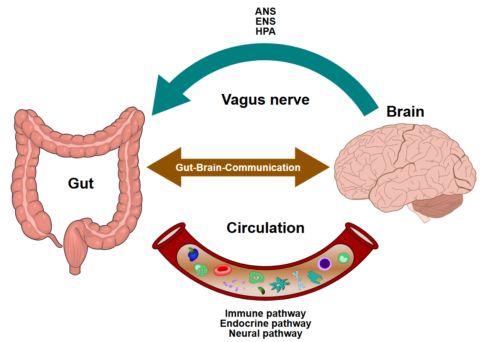

Neurobiología de la conducta
¿Qué nos mueve?
Dr. Luis A. Téllez · Instituto de Neurobiología, UNAM

01 Conducta motivada
- Evalúa necesidades y metas.
- Anticipa recompensas.
- Moviliza recursos para actuar.

02 Sistemas clave
- Homeostático: detecta hambre y sed.
- Ejecutivo: planifica acciones.
- Dopaminérgico: procesa recompensas.

03 De la necesidad a la acción

- 1Activación
- 2Selección
- 3Planifica
- 4Ejecución
04 Alimentación: modelo de estudio
- Forrajeo: búsqueda y memoria espacial.
- Cacería: percepción y precisión motora.
05 Ganglios basales
- Integran señales y seleccionan acciones.
- La dopamina refuerza decisiones útiles.

06 Nuevas herramientas
- Perfiles genéticos neuronales.
- Registro y control neuronal.
- Conexión intestino-cerebro.

07 Relevancia clínica
Movimiento: Parkinson y Huntington
Conducta y metabolismo: TOC, adicciones y obesidad